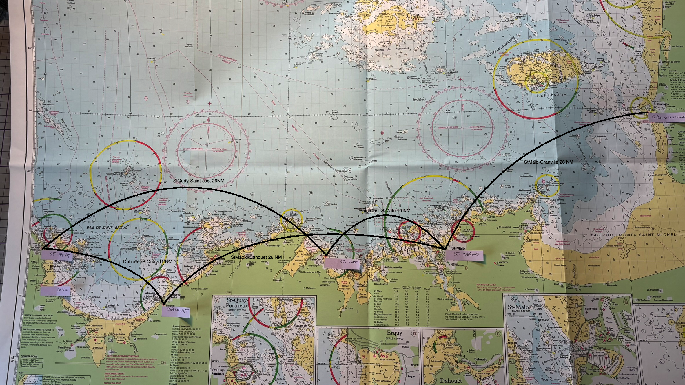

Saturday, May 9 to Friday May 15.
All times French Summer Time (FST).

Both Cat A with no tidal constraints.
Bassin Vauban
HW −0230 to +0230. Inbound on tidal ½ hour, outbound on the hour. Be ready for minor delays.
Access: 11:20 to 16:20.
Bas-Sablons
Sill dries 2 m. For 2.2 m draft, need 2 + 2.2 + 1 = 5.2 m tide.
Access: 0900 to 1920
St. Malo
Bassin Vauban
Access: 12:50 to 17:50.
Bas-sablons Vauban
Sill dries 2 m. For 2.2 m draft, need 2 + 2.2 + 1 = 5.2 m tide.
Access: 10:35 to 20:15.
Granville
Gate dries 5.25 m, depth of 2.5 m on V berths. Need 5.25 + 2 + 1 = 8.25 m.
Access: 13:25 to 17:40.
Granville
Access: 02:00 to 06:10. Sunrise 06:30.
St. Malo
Access: 12:10 to 21:00.
St. Malo
Bas-Sablons. Sill dries 2 m. For 2.2 m draft, need 2 + 2.2 + 1 = 5.2 m tide.
Access until 09:10.
Dahouet
2.5 m inside basin. Sill dries 5.5 m. Need 5.5 + 2 + 1 = 8.5 m.
Access: 15:45 to 19:00.
Dahouet
Access until 07:30, then from 16:10.